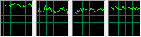

Multithreaded programming is damned difficult - making effective use of multiple cores is not a simple case of setting a compiler flag. You have to have a pretty good bit of 3D software to be able to make full use of a multi-core CPU. Like, say, my final-year project 
Ya, it’s all a bit strange check out some examples…
Lost planet:

Bioshock:
Crysis:
Each of these games claim to be multi-core.
These sort of claims bother me, when clearly it’s not that ‘optimized’
So I tried the dual-cpu tweak, and my TF2 is now silky smooooooth. It’s rather lurvely. 
.
I’m going to enable that little addition to add that little bit of detail.
It’s like no work, and a nice (while very subtle) graphical increase. My GTX 260s, should handle it just fine. So should the 4870, and hell the 8800GTS 512 should as well.
Just to throw my own 2 cents in for the OP’s problems - I have a slightly faster Athlon X2 4400+ than he, and when I had an X1950 and then later a 8800GTS I could run TF2 very well at high detail in 1680 * 1050 with no issues. Now I’ve got a HD4850 in there and I can max the details on 1920 * 1080 (on my new monitor) with even better performance, still with the Athlon X2. The difference is I have 2GB of RAM, so based purely on my own experience I’d tell him that another gigabyte of RAM is the easiest and most cost-effective way he could improve his performance, if he decides to do that rather than play with tweaked down settings.
do you have Tex-det at “extra high”?
AA 16xQ?
From memory, I’ve got the texture detail maxed, but don’t have the AA at max because at that resolution on a 23 inch monitor I don’t need it. It’s about halfway up, either 4x or 8x I think?
Btw, mat_picmip -10 works with CS and even with HL2…
Great news
.
Huh, my testing fails me again.